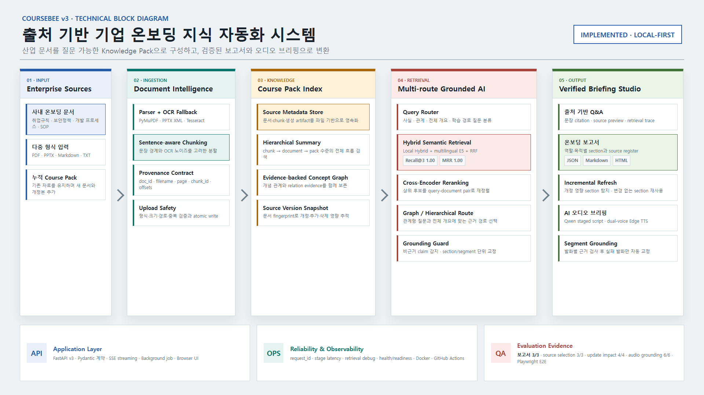
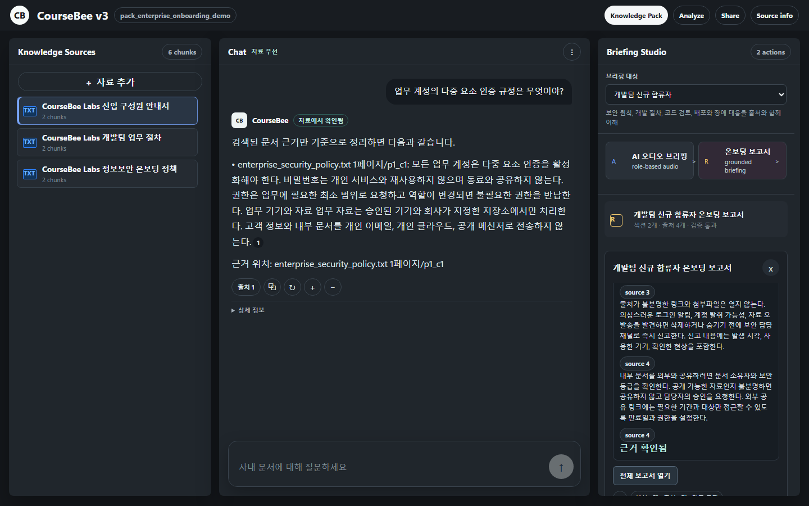
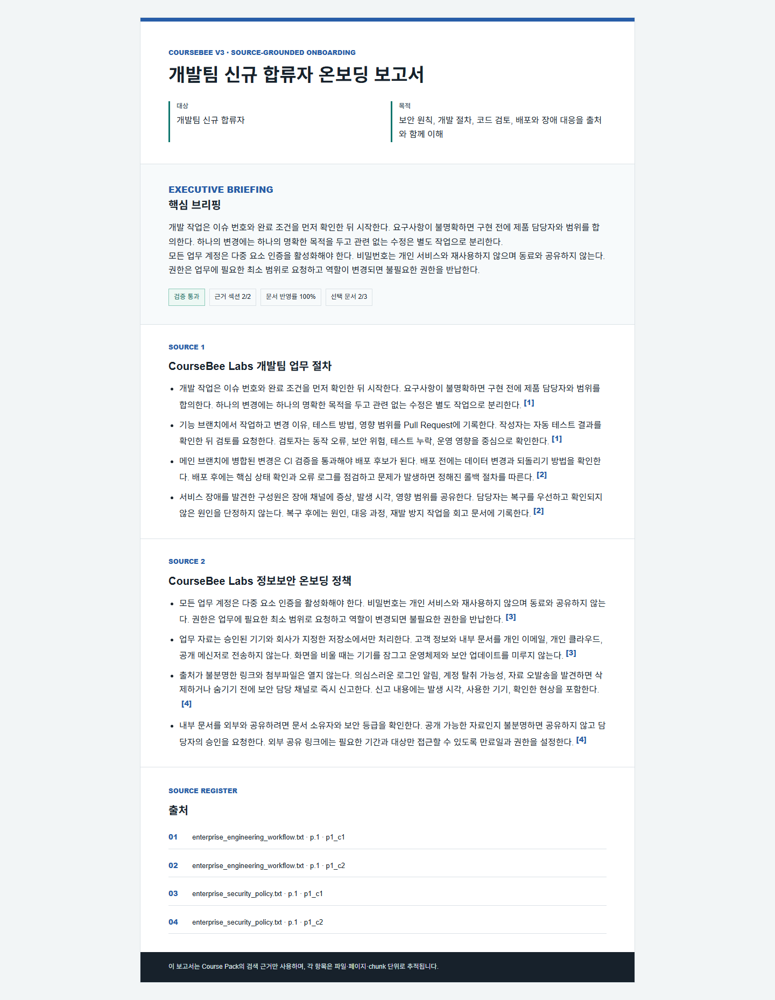

01 · Document Intelligence
문장 경계 기반 chunking과 OCR fallback을 적용하고, 문서·페이지·chunk metadata를 끝까지 보존한다.
CourseBee v3 · AI Backend Portfolio Report
다중 문서 RAG와 Grounding Guard를 결합해 흩어진 규정과 업무 절차를 출처 기반 Q&A, 온보딩 보고서, 오디오 브리핑으로 변환하는 local-first 지식 자동화 서비스
취업규칙, 보안 정책, 개발 절차가 여러 파일에 흩어져 필요한 규정을 찾기 어렵다.
일반 LLM이 자료에 없는 절차를 실제 회사 규정처럼 생성하면 업무 위험으로 이어진다.
원문이 바뀔 때 보고서와 교육 자료를 다시 확인하고 배포하는 비용이 반복된다.
PDF, PPTX, Markdown, TXT를 하나의 질의 가능한 지식 묶음으로 구성한다.
Q&A, 보고서, 오디오가 같은 문서·페이지·chunk provenance 계약을 공유한다.
source fingerprint로 영향 섹션을 찾고 바뀌지 않은 섹션은 재사용한다.
다중 형식 문서를 누적 업로드하고 안전성을 검사한다.
신입, 개발팀, 보안 교육 등 브리핑 대상을 선택한다.
라우터가 hybrid, semantic, graph 경로를 선택한다.
보고서를 기본으로 Q&A와 오디오를 함께 제공한다.
근거 검사와 변경 영향 추적으로 최신성을 관리한다.

LLM 출력보다 검색 근거를 먼저 확정한다. 근거 검사를 통과하지 못한 섹션과 발화는 source-grounded 결과로 복구한다.
퀴즈와 카드 기능은 숨기고, 기업 업무에 직접 연결되는 보고서와 오디오 흐름의 완성도를 우선했다.
현재는 재현 가능한 local-first 구현이며, 저장소·작업 큐·권한 계층을 운영 인프라로 교체할 계약을 분리했다.
Implementation · Evidence · Evaluation
“RAG를 넣었다”가 아니라, 검색 근거가 실제 산출물과 운영 변화까지 어떻게 이어지는지를 검증했다.
문장 경계 기반 chunking과 OCR fallback을 적용하고, 문서·페이지·chunk metadata를 끝까지 보존한다.
질문 유형에 따라 local hybrid, multilingual E5, RRF, Cross-Encoder, graph 및 hierarchical 경로를 선택한다.
Qwen 기반 장문 생성에 단계형 prompt를 적용하고, section·segment 단위 근거 검사와 deterministic fallback을 결합했다.
v3 API 계약과 v2 하위 호환, 요청 trace, Docker smoke test, 브라우저 E2E와 5개 평가 스위트를 CI에 연결했다.


| 검증 영역 | 고정 fixture 결과 |
|---|---|
| 기본 retrieval router / 필수 출처 recall | 10/10 · 9/9 |
| 온보딩 시나리오 / 근거 섹션 | 3/3 · 6/6 |
| 목적별 문서 선택 recall·precision | 3/3 |
| 문서 변경 영향·증분 갱신 | 4/4 |
| 오디오 grounding / 비근거 탐지 | 6/6 · 3/3 |
| Desktop·Mobile 브라우저 E2E | PASS |
취업규칙과 필수 업무 절차를 대상별 보고서로 제공
계정, 자료 공유, 사고 신고 규정을 출처와 함께 전달
개발·검토·배포·장애 대응 흐름을 역할별로 재구성
변경된 문서와 영향 섹션만 찾아 보고서와 오디오 갱신
| 현재 포트폴리오 구현 | 운영 환경 확장 |
|---|---|
| 프로세스 내부 semantic index | Vector DB · 분산 cache |
| 로컬 JSON · file artifact | RDB · Object Storage |
| FastAPI background task | Durable queue · worker |
| 선택적 API key | 조직·사용자·문서별 RBAC |
| 요청 trace · health check | OpenTelemetry · 중앙 metric |
CourseBee v3의 핵심은 신기술의 개수가 아니다. 하나의 provenance 계약을 Q&A, 보고서, 오디오가 공유하고, 비근거 생성과 문서 개정이라는 실제 운영 문제를 자동 평가로 통제한 점이다.